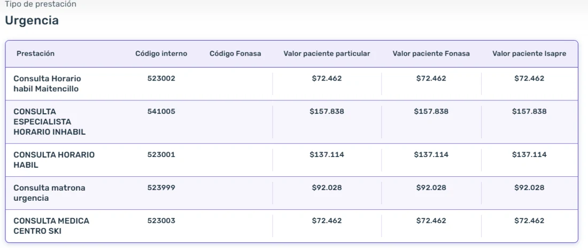
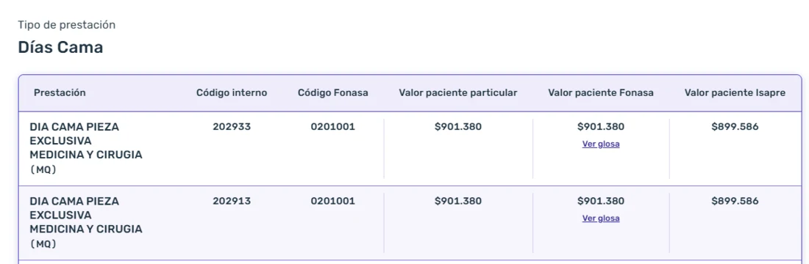
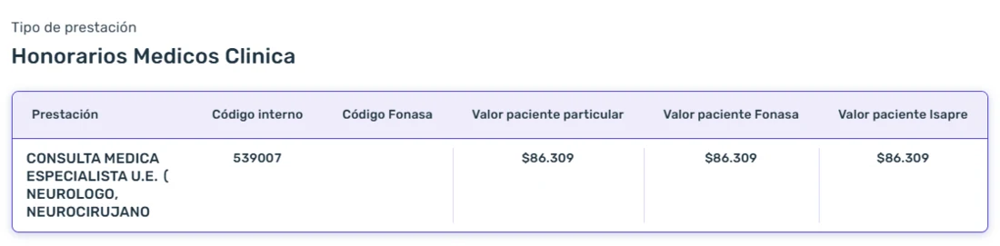
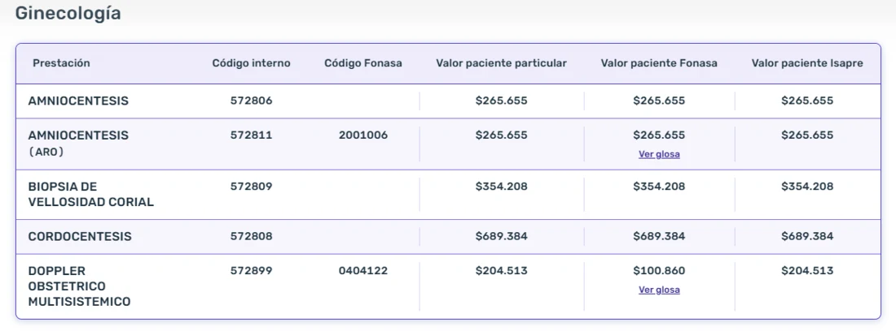
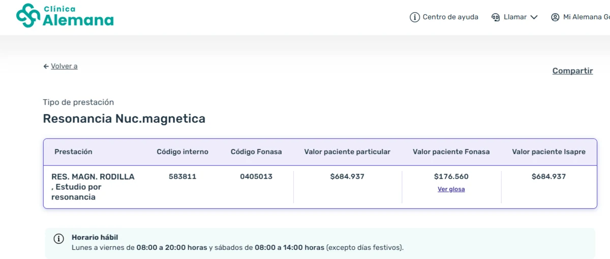
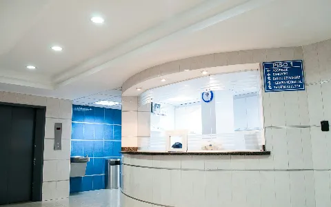

Clínica Alemana: cuánto cuesta atenderse ahí y qué Isapre conviene
Las sedes, los precios que publica la propia clínica y el detalle que casi nadie mira: acá la columna de paciente Isapre no baja del valor particular, y buena parte del arancel no tiene código Fonasa.
En una línea: En Clínica Alemana el valor para paciente Isapre es prácticamente el mismo que el particular, y buena parte de lo que se cobra no tiene código Fonasa. Lo que define tu bolsillo no es el porcentaje del plan, sino si ese plan tiene con qué cubrir lo que no tiene código.
Las sedes de Clínica Alemana
Es una clínica de alta complejidad con su campus principal en Vitacura y una red de sedes y centros médicos en el sector oriente de Santiago, más dos centros médicos de temporada en Maitencillo y La Parva que aparecen con precio propio en su arancel.
| Sede | Dónde está |
|---|---|
| Clínica Alemana Vitacura | Av. Vitacura 5951, Vitacura |
| Clínica Alemana La Dehesa | Lo Barnechea |
| Clínica Alemana Chicureo | Chicureo, Colina |
| Centro Médico San Carlos de Apoquindo | Las Condes |
| Centro Médico Plaza Egaña | Plaza Egaña |
| Centros médicos de temporada | Maitencillo y La Parva |
Revisa esto en tu plan: hay planes que nombran solo "Clínica Alemana" y dejan fuera sus centros médicos. Si tu médico atiende en La Dehesa, en San Carlos de Apoquindo o en Plaza Egaña y tu plan solo nombra la clínica, esas consultas te quedan en libre elección, que cubre bastante menos.
Cuánto cuesta una urgencia
Estos son los valores del arancel que publica la clínica. Fíjate en la columna del medio: ninguna de estas prestaciones tiene código Fonasa, y el valor es exactamente el mismo si llegas particular, con Fonasa o con Isapre.
| Prestación | Código Fonasa | Particular, Fonasa e Isapre |
|---|---|---|
| Consulta de urgencia, horario hábil | sin código | $137.114 |
| Consulta de urgencia con especialista, horario inhábil | sin código | $157.838 |
| Consulta de matrona en urgencia | sin código | $92.028 |
| Consulta médica en el centro médico de Maitencillo | sin código | $72.462 |
| Consulta médica en el centro médico de ski | sin código | $72.462 |
Son solo las consultas. Exámenes, procedimientos, insumos y medicamentos se suman aparte en la cuenta final.

Hospitalización: el día cama
El día cama sí tiene código Fonasa, y aun así el valor para paciente Isapre queda casi idéntico al particular: $1.794 de diferencia, un 0,2%.
| Prestación | Código Fonasa | Particular | Fonasa | Isapre |
|---|---|---|---|---|
| Día cama pieza exclusiva, medicina y cirugía | 02 01 001 | $901.380 | $901.380 | $899.586 |

Y eso es solo la cama, por noche, sin pabellón, honorarios ni insumos. Con un plan que cubra 90% en esta clínica, cada noche te deja un copago de $90.138. Con uno que cubra 70%, $270.414.
Honorarios médicos y ginecología
La consulta con especialista en la unidad de emergencia, neurólogo o neurocirujano entre otros, son $86.309 y tampoco tiene código Fonasa.

En medicina materno fetal pasa lo mismo con los procedimientos más delicados del embarazo. Acá se ve claro el efecto del código: el doppler obstétrico, que sí lo tiene, con Fonasa baja a la mitad. Los que no lo tienen se pagan igual con o sin previsión.
| Prestación | Código Fonasa | Particular e Isapre | Fonasa |
|---|---|---|---|
| Amniocentesis | sin código | $265.655 | $265.655 |
| Amniocentesis en alto riesgo obstétrico | 20 01 006 | $265.655 | $265.655 |
| Biopsia de vellosidad corial | sin código | $354.208 | $354.208 |
| Cordocentesis | sin código | $689.384 | $689.384 |
| Doppler obstétrico multisistémico | 04 04 122 | $204.513 | $100.860 |

El detalle que casi nadie mira: la columna Isapre
Las clínicas publican un valor distinto para pacientes de Isapre, que normalmente es más bajo que el particular. Esa brecha es lo que negocia tu Isapre por ti. En Clínica Alemana esa brecha prácticamente no existe.
La misma resonancia de rodilla, código 04 05 013. En Clínica Santa María el valor particular es $589.600 y el de Isapre $496.100. En Clínica Las Condes, $578.432 y $510.068. En Clínica Alemana el particular es $684.937 y el de Isapre es el mismo, $684.937. Con Fonasa baja a $176.560.

Sobre ese valor se calcula tu copago. Por eso, con el mismo plan y el mismo porcentaje, atenderse acá cuesta más que en otra clínica. Si quieres ver la diferencia completa, la tenemos medida en la comparación de precios entre clínicas.
Lo que no tiene código Fonasa, que acá es mucho
Cuando una prestación no tiene código Fonasa, no existe arancel de referencia: ni Fonasa ni el arancel base de una Isapre la bonifican. Se paga particular, salvo que tu plan tenga un arancel propio que la incluya.
En el arancel de esta clínica eso no es una excepción rara. De lo que acabas de ver, no tienen código Fonasa:
- Todas las consultas de urgencia, las cinco, incluida la de matrona.
- La consulta con especialista en la unidad de emergencia, $86.309.
- La amniocentesis en su versión general, $265.655.
- La biopsia de vellosidad corial, $354.208.
- La cordocentesis, $689.384.
Ahí está el punto de esta ficha. Puedes tener un plan que diga 90% y aun así pagar completa una urgencia de $137.114, porque no hay código sobre el cual aplicar ese 90%.
Las 7 Isapres frente a Clínica Alemana
En verde, donde cubre bien, y en rojo, donde se queda corta. Las dos primeras filas son las que más separan a una Isapre de otra en esta clínica.
Desliza la tabla para ver todas las Isapres →
| En Clínica Alemana | |||||||
|---|---|---|---|---|---|---|---|
| Urgencias integrales en Alemana (copago fijo) | Sí, desde 70% ambulatorio | No tiene acá | No tiene acá | No tiene acá | No tiene acá | No tiene acá | No tiene acá |
| Red GES y CAEC en Clínica Alemana | Sí | No | No | No | No | No | No |
| Prestaciones sin código Fonasa | Sí, en el porcentaje del plan | Sí, en el porcentaje del plan | No las cubre | No las cubre | No las cubre | No las cubre | No las cubre |
| Kinesiología | Sin tope | Con tope | Con tope | Tope anual muy bajo | Sin tope en preferentes | Sin bono: pagas y reembolsas | Tope anual muy bajo |
| Prótesis y órtesis | Sin tope | Sin tope | Sin tope | Hasta 50 UF | Hasta 150 UF | Tope muy bajo | Hasta 10 UF |
| Quimioterapia | Sin tope | Sin tope | Sin tope | Hasta 1.000 UF | Hasta 700 UF | Sin cobertura preferente | Sin cobertura preferente |
Oferta vigente a septiembre de 2026. La fila de GES y CAEC mira solo si Clínica Alemana está en esa red: varias Isapres tienen redes amplias, pero con otras clínicas. Las coberturas cambian según el plan y se confirman al momento de cotizar.
Qué Isapre conviene en Clínica Alemana
Esencial es la que mejor resuelve esta clínica, y le saca ventaja al resto en dos cosas que hoy solo ella tiene acá:
- Es la única con copago fijo de urgencia en Clínica Alemana, en sus planes con preferente Alemana desde 70% ambulatorio. Con el resto, una urgencia se paga según los porcentajes y topes del plan, y el monto lo sabes cuando te pasan la cuenta.
- Es la única con red GES y CAEC en la propia Alemana. Si aparece algo grave, te quedas en tu clínica en vez de moverte a la que te asigne el convenio.
Y además cubre en el porcentaje del plan las prestaciones sin código Fonasa, que acá son buena parte del arancel. En eso último Vida Tres la iguala, pero en urgencia y en CAEC dentro de Alemana no.
Vida Tres entra por otro lado y también sirve: cubre lo que no tiene código con el arancel propio de sus planes de línea alta, y suele ser una entrada más barata a esta clínica cuando la combinas con el seguro de la propia Alemana. Si el presupuesto no alcanza para un plan preferente Alemana, ese es el camino a mirar.
Antes de decidir: que una Isapre cubra lo sin código no sirve si el plan no nombra a Clínica Alemana en su oferta preferente. Son dos cosas distintas y las dos tienen que estar.
El seguro de la propia clínica
Clínica Alemana ofrece un seguro complementario propio y, en la práctica, a veces es la vía más fácil para acceder a la clínica sin un plan de línea alta. Tiene una condición que conviene saber antes: piden que tu plan previsional bonifique al menos un 40% de la prestación. Si tu plan cubre menos que eso en esta clínica, el seguro no te va a arreglar la cuenta.
O sea, no reemplaza al plan: lo complementa. Primero hay que tener un plan que cubra acá, y después el seguro se hace cargo de una parte de lo que queda. Las condiciones vigentes conviene confirmarlas con la propia clínica.
Acá es donde Vida Tres se vuelve interesante. Un plan de Vida Tres que llegue a ese 40% más el seguro de la clínica suele ser una entrada más barata a Alemana que un plan con preferente Alemana completo. No es la misma cobertura, pero si el presupuesto manda, es la ruta que hay que evaluar.
Preguntas frecuentes
¿Qué Isapre conviene si me atiendo en Clínica Alemana?
Esencial, y por dos motivos concretos: es la única con copago fijo de urgencia en Clínica Alemana, en planes con preferente Alemana desde 70% ambulatorio, y la única con red GES y CAEC en la propia Alemana. Además cubre en el porcentaje del plan las prestaciones sin código Fonasa. Vida Tres también cubre lo sin código y suele ser una entrada más barata a esta clínica si la combinas con el seguro de la propia clínica.
¿Por qué en Clínica Alemana el valor para Isapre es igual al particular?
Porque así lo publica su arancel: en urgencia, honorarios y ginecología las columnas particular, Fonasa e Isapre traen el mismo valor, y en el día cama la diferencia es de $1.794. En otras clínicas la columna Isapre sí es más baja. Sobre ese valor se calcula tu copago, así que el punto de partida acá es más alto.
¿Cuánto cuesta una urgencia en Clínica Alemana?
La consulta de urgencia en horario hábil son $137.114 y con especialista en horario inhábil $157.838, sin contar exámenes, procedimientos ni insumos, que se suman aparte. Ninguna de esas consultas tiene código Fonasa en el arancel de la clínica.
¿Qué pasa con las prestaciones que no tienen código Fonasa?
Si una prestación no tiene código Fonasa, no hay arancel de referencia, así que ni Fonasa ni el arancel base de una Isapre la bonifican. Se paga particular, salvo que tu plan tenga un arancel propio que la incluya.
¿Sirve el seguro de la propia clínica?
Puede ayudar, y de hecho a veces es la vía más fácil para llegar a esta clínica sin pagar un plan con preferente Alemana completo, sobre todo combinado con Vida Tres. Tiene una condición: piden que tu plan previsional bonifique al menos un 40% de la prestación. Si tu plan cubre menos que eso acá, el seguro tampoco te va a salvar. Las condiciones vigentes conviene confirmarlas con la propia clínica.
¿Es más cara que otras clínicas?
Sí. La misma resonancia de rodilla, código 04 05 013, cuesta $684.937 acá y $272.811 en Clínica RedSalud Santiago. Eso no significa que una sea mejor que la otra: todas las clínicas privadas cumplen los mismos estándares de acreditación. Significa que con el mismo plan tu copago parte de una base distinta.
¿Te atiendes en Clínica Alemana?
Revisamos si tu plan te cubre de verdad en esta clínica, incluidas las prestaciones que no tienen código Fonasa. Gratis y sin compromiso.
Quiero que revisen mi plan →Artículos que te podrían interesar

Ranking de las mejores clínicas de ChileLas 10 clínicas mejor evaluadas del país y lo que ese ranking no mide: cuánto te cuesta atenderte en cada una. Clínicas RedSalud: la red más grande de ChileCuánto cuesta el mismo examen y la misma cirugía acá y en una clínica del segmento alto. Clínica Santa María: qué Isapre conviene si te atiendes ahíSus 5 sedes, los precios que publica la clínica y las prestaciones que no tienen código Fonasa.Los precios son del arancel publicado por Clínica Alemana y fueron consultados el 28 de septiembre de 2026; pueden cambiar. Los valores de urgencia y de procedimientos corresponden a la prestación y no incluyen exámenes, insumos ni medicamentos, que se suman aparte. Las coberturas de cada Isapre son referenciales, cambian según el plan y se confirman al momento de cotizar. Para evaluar tu caso particular, te recomendamos una asesoría.